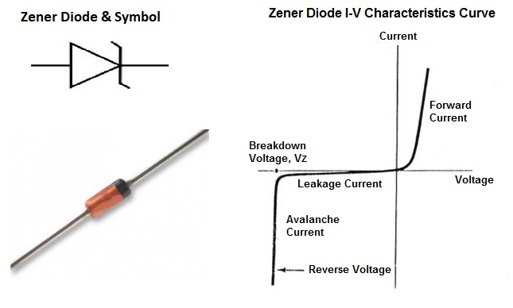
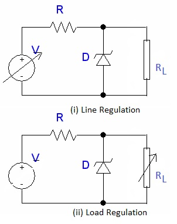
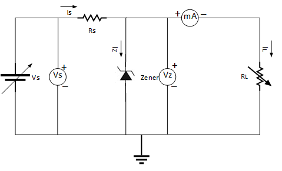
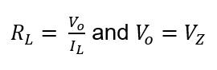
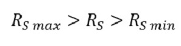

| |
AIM:
To study the volatge regulation using zener diode.
SOFTWARE REQUIRED:
OrCAD-PSpice/MATLAB-SIMULINK
THEORY:

Zener diodes are a special kind of diode which permits current to flow in the forward direction. What makes them different from other diodes is that Zener diodes will also allow current to flow in the reverse direction when the voltage is above a certain value. This breakdown voltage is known as the Zener voltage. In a standard diode, the Zener voltage is high, and the diode is permanently damaged if a reverse current above that value is allowed to pass through it. Zener diodes are designed in a way where the Zener voltage is a much lower value. There is a controlled breakdown which does not damage the diode when a reverse current above the Zener voltage passes through a Zener diode. The most common values for nominal working voltage are 5.1 V, 5.6 V, 6.2 V, 12 V and 15 V. We also carry Zener diodes with nominal working voltage up to 1 kV. Forward (drive) current can have a range from 200 uA to 200 A, with the most common forward (drive) current being 10 mA or 200 mA. In the forward bias direction, the zener diode behaves like an ordinary silicon diode. In the reverse bias direction, there is practically no reverse current flow until the breakdown voltage is reached. When this occurs there is a sharp increase in reverse current. Varying amount of reverse current can pass through the diode without damaging it. The breakdown voltage or zener voltage (VZ) across the diode remains relatively constant. The maximum reverse current is limited, however, by the wattage rating of the diode. Avalanche Break down:
When the diode is in the reverse bias condition, the width of the depletion region is more. If both p-side and n-side of the diode are lightly doped, depletion region at the junction widens. In reverse bias, the minority charge carrier current flows through junction. As the applied reverse voltage increases the minority carriers acquire sufficient energy to collide with the carriers in the covalent bonds inside the depletion region. As a result, the bond breaks and electron-hole pairs are generated. The process becomes cumulative and leads to the generation of a large number of charge carriers resulting in Avalanche Breakdown. Zener Break down:
If both p-side and n-side of the diode are heavily doped, depletion region at the junction reduces compared to the width in normal doping. Applying a reverse bias causes a strong electric field get applied across the device. As the reverse bias is increased, the Electric field becomes strong enough to rupture covalent bonds and generate large number of charge carriers. Such sudden increase in the number of charge carriers due to rupture of covalent bonds under the influence of strong electric field is termed as Zener breakdown. Zener Diode as Voltage Regulator:
The function of a regulator is to provide a constant output voltage to a load connected in parallel with it in spite of the ripples in the supply voltage or the variation in the load current and the zener diode will continue to regulate the voltage until the diodes current falls below the minimum IZ(min) value in the reverse breakdown region. It permits current to flow in the forward direction as normal, but will also allow it to flow in the reverse direction when the voltage is above a certain value - the breakdown voltage known as the Zener voltage. The Zener diode specially made to have a reverse voltage breakdown at a specific voltage. Its characteristics are otherwise very similar to common diodes. In breakdown the voltage across the Zener diode is close to constant over a wide range of currents thus making it useful as a shunt voltage regulator. The purpose of a voltage regulator is to maintain a constant voltage across a load regardless of variations in the applied input voltage and variations in the load current. A typical Zener diode shunt regulator is shown in Figure 3. The resistor is selected so that when the input voltage is at VS(min) and the load current is at IL(max) that the current through the Zener diode is at least IZ(min). Then for all other combinations of input voltage and load current the Zener diode conducts the excess current thus maintaining a constant voltage across the load. The Zener conducts the least current when the load current is the highest and it conducts the most current when the load current is the lowest. If there is no load resistance, shunt regulators can be used to dissipate total power through the series resistance and the Zener diode. Shunt regulators have an inherent current limiting advantage under load fault conditions because the series resistor limits excess current. A Zener diode of break down voltage VZ is reverse connected to an input voltage source VS across a load resistance RL and a series resistor RS. The voltage across the zener will remain steady at its break down voltage VZ for all the values of Zener current IZ as long as the current remains in the breakdown region. Hence a regulated DC output voltage V0 = VZ is obtained across RL, whenever the input voltage remains within a minimum and maximum voltage. Basically there are two type of regulations such as: a. Line Regulation:

In this type of regulation, series resistance and load resistance are fixed, only input voltage is changing. Output voltage remains the same as long as the input voltage is maintained above a minimum value. The line regulation graph is plotted by taking VS along X-axis VO along Y-axis. The expression to calculate the percentage line regulation is 

b. Load Regulation:
In this type of regulation, input voltage is fixed and the load resistance is varying. Output volt remains same, as long as the load resistance is maintained above a minimum value. The load regulation graph is plotted by taking IL along X-axis and VO along Y-axis. To calculate percentage load regulation, mark VNL and VFL on the Y axis on the load regulation graph. VNL is the output voltage in the absence of load resistor and VFL is the output voltage corresponds to rated IL. The expression to calculate the percentage load regulation is 

Other Web Links: Link-1, Link-2
DESIGN:

Output requirement:
VO = Output voltage , IL= rated current when the input is in the range of VS(min) to VS(max)
Design of Load resistor RL

Design of series resistance RS


|